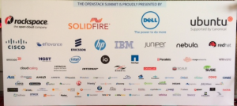
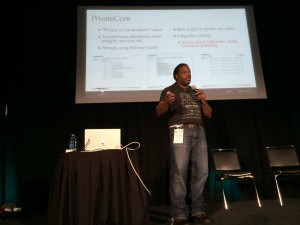

OpenStack Summit May 2014 – Security Insights

Oded Horovitz
What an exciting event! This was my first time participating in the OpenStack Summit series, and the May 2014 summit was located in hot and rainy Atlanta
GA left me with sense of being part of something big, and a strong desire to participate in the upcoming event (and not just because of the Paris location). As you entered the event, you could see the sponsor wall proudly presenting PrivateCore among many great OpenStack companies.

The show floor was very busy, and the casual dress code suggested this is going to be a fun event, where I would get my fair share of geeking out time. As you can read below, I wasn’t disappointed.
OpenStack is a growing force as indicated by the bi-annual user-survey. And the survey tracks Dev/QA, PoC, and Production deployment stages independently. Thank you OpenStack community for some great information!
Lets talk Security
Being a founder of a security company, I have a slight security bias, and the first two days offered a wealth of security-related talks. Below are some notes that I thought might be interesting to PrivateCore blog readers.
Russell Haering talk on Multi-Tenant Bare Metal Provisioning with Ironic triggered a set of question around firmware security. The problem presented by several attendees is the following: “how could one detect or prevent a bare metal tenant attempt to reflash the BIOS firmware or any other IO-device firmware?”. My best recommendation for detecting firmware updates that will run on the main CPU is to take advantage of the Trusted Platform Module (TPM) chip on your servers to validate the firmware before any sensitive data touches the server. Our vCage Manager can be of help here. As for IO-device firmware, unfortunately, the answer is not as simple, and my design assumption is assume these IO-devices as malicious, and build your stack to defend against them.
Next was the Bryan D Payne talk on Security for Private OpenStack clouds. The talk was more of an open discussion with OpenStack operators rather than a presentation, providing the opportunity to hear back from the community about their best practices. What caught my attention was a comment from one of the security operators at Yahoo. His claim (if I understood correctly) was that they assume every guest VM will be compromised. So far no big news. Then he added that they assume compromised guest VMs will successfully escape to the hypervisor. Now that is some bold statement. Later he explained to me that through Nova message signing, even compromised hypervisors do not have much of a say on their Control Plane. Unfortunately, our conversation was interrupted, and I was left without understanding the full architecture, I hope to catch up with him back in the Bay Area.
While walking the expo floor I had a chance encounter at the demo theater with an interesting technology from HGST.  As you can see, HGST is working on an open architecture, turning a hard-disk into a Linux server. The hard-disk has a dedicated CPU, memory and ethernet port. It runs Linux, and allows applications such as distributed file-system to run directly on the disk, saving CPU cycles, and all related trips on the server bus. My interest in this advancement relates to the possibility of turning this into an “hardware implant for script-kiddies”. In my blog earlier this year, I touched on a leaked NSA software implant called IRATEMONK – a firmware implant affecting many vendor hard-disk controllers, and allowing a stealthy MBR code injection. With the new work from HGST, anyone capable of writing a Linux application will likely be able to do the same. Technology innovation frequently happens without considering the security implications.
As you can see, HGST is working on an open architecture, turning a hard-disk into a Linux server. The hard-disk has a dedicated CPU, memory and ethernet port. It runs Linux, and allows applications such as distributed file-system to run directly on the disk, saving CPU cycles, and all related trips on the server bus. My interest in this advancement relates to the possibility of turning this into an “hardware implant for script-kiddies”. In my blog earlier this year, I touched on a leaked NSA software implant called IRATEMONK – a firmware implant affecting many vendor hard-disk controllers, and allowing a stealthy MBR code injection. With the new work from HGST, anyone capable of writing a Linux application will likely be able to do the same. Technology innovation frequently happens without considering the security implications.
{kind=link}
The Marketplace
As sponsors of the event we had a space to present our warez, and had many lively discussions with the summit crowd. To my pleasant surprise, most attendees we spoke with understood TPMs, Intel Trusted Execution Technology (Intel TXT) and general Trusted Computing concepts. This resulted in lots of deep discussions about implementation of the technology in their environment – the OpenStack crowd understood the value of system integrity controls that PrivateCore brings to OpenStack.
to present our warez, and had many lively discussions with the summit crowd. To my pleasant surprise, most attendees we spoke with understood TPMs, Intel Trusted Execution Technology (Intel TXT) and general Trusted Computing concepts. This resulted in lots of deep discussions about implementation of the technology in their environment – the OpenStack crowd understood the value of system integrity controls that PrivateCore brings to OpenStack.
Peek into PrivateCore roadmap
If you had a chance to join Keith Basil TripleO talk, you should have noticed the slide showcasing PrivateCore’s technology integration into OpenStack on OpenStack (TripleO). We have not publicly shared details of integration, but if you are interested learning how trusted computing plays directly into cloud deployment and management, please get in contact with us for a preview.
{kind=link}
See you all at November’s OpenStack Summit in Paris!
2014 Prediction: Smart Cyber Criminals Learn From NSA “Software Implants”
Happy New Year and welcome to 2014! We are off to a rip-roaring start with news of the NSA’s exploit techniques. Following on Der Spiegel’s revelations about the US National Security Agency (NSA) Tailored Access Operations (TAO) group, the new year brought with it news of specific tools used by the NSA Advanced Network Technology (ANT) division detailed in the catalog of exploits described by Der Spiegel and Wired.
Oded Horovitz
While there is not much enterprises can do to counter the NSA going after a specific target (if they want your sensitive data, they will find a way to get it), the more worrisome issue is the criminal community digesting the news and learning from the masters of system penetration. You can expect that techniques described in the NSA ANT catalog will soon be used by the hacker community to create similar exploits.
As mentioned in Todd’s earlier blog post, the NSA technologists have designed their exploits for persistence and use the system BIOS as a launching pad. These bootkits (referred to as “software implants” in the NSA catalog) are the first thing to load when a system starts and can lock themselves into a privileged background process called “System Management Mode” (SMM) from which they can passively inspect data, or actively inject payloads into the running operating system or hypervisor. Some examples of the NSA persistent software implant approach include:
DEITYBOUNCE (highlighted in Bruce Schneier’s blog) and IRONCHEF (also highlighted in Bruce Schneier’s blog) exploit the x86 server BIOS and utilizing SMM to drop their payloads.
{kind=link}
{kind=link}
IRATEMONK infects the firmware on a common HDD controller, and performs a Man-in-the-Middle (MITM) attack to inject code into the Master-Boot-Record (MBR) of the system on the fly at boot time.
I founded PrivateCore knowing that these sorts of weaknesses existed in today’s computing infrastructure, and anticipating that hackers will take advantage of these weakness to gain data access and system control. Now that the NSA catalog is out in the open, we have evidence that indeed these weaknesses are being exploited in the wild.
PrivateCore vCage counters all of the BIOS threats to servers described in the NSA catalog. Why can I make such a broad claim? We protect servers with some foundation technology: validating the integrity of x86 servers with remote attestation to counter BIOS infection trying to fly under the radar. We follow the motto of “verify then trust” when it comes server integrity. Infected BIOS? Infected MBR? We’ve got our eyes on you! This video describes how PrivateCore vCage does this in an OpenStack environment.
The NSA ANT catalog is dated 2008 so how come we never heard about a breach using these exploits? If I would have to guess, the NSA has been very diligent in using these tools in a pin-point fashion to go after specific targets. Criminals on the other hand, will not be as discriminating or precise, and you should expect more widespread use of these techniques.
While techniques described in the NSA ANT catalog were previously in the realm of well-funded state actors, you can expect them to come to a server near you as they become commonplace tools of criminal actors. Verifying (rather than taking for granted) the integrity of your compute infrastructure and having measures in place to counter these sorts of persistent threats will enable you to have a better night’s sleep in 2014.
The core (in)security problem of cloud computing

If you’re reading this blog, you might be wondering what this PrivateCore thing is all about. I want to give you some perspective on the company, the problems we intend to solve, and why I believe it will leave a dent in the security universe.
What was the big problem that I saw that motivated me to co-found PrivateCore? I’ve been in this industry for over 20 years, most of the time building information security products. At my core, I am a security technologist trying to deliver value in the real world.
As I looked around the industry a few years back, I saw virtualization taking over the data-center and how virtualization-enabled infrastructure-as-a-service (IaaS, AKA cloud computing) was taking off. While the cloud’s agility, scale, and pay per use model offer enterprises great value, it was clear to me that cloud (in)security will be a top concern for the enterprise.
Virtualized Does Not Mean Magically Secure
Virtualization allows for the decoupling of virtual machines from the underlying hardware, making it possible to move computation around without requiring changes to the source code or the binaries of existing applications. Virtualization gave birth to cloud computing, but it did not made it secure.
The ability to consume computation as a service does not remove the enterprise need for security, and enterprises expect the same security controls in the cloud as they have in their own private data-centers. Indeed, most security controls such as network security, access controls, patch management, and application configuration, can be deployed as software solutions by the enterprise. However, there is one group of controls with which the enterprise struggles: physical security controls.
The Physical Access Gap
With physical access you don’t need to hack your way into the network, you can simply walk away with the data. Back in the enterprise data-center, physical security controls protect against physical extraction of data. With physical controls in the hands of the cloud providers, enterprises find a whole new set of people roaming unnoticed around “their” share of the cloud provider data-center, starting with the cloud provider employees, sub-contractors, and sometimes even government agencies armed with subpoenas looking to get access to data.
The concept that started dominating my brain was: how can enterprises secure their data in the absence of traditional physical security measures that the enterprise directly controls?
To eliminate the obvious, let me quickly explain why traditional data-at-rest encryption and data-in-transit encryption can not mitigate the “physical backdoor” problem. The flaw with these technologies in the cloud is that even when data is encrypted on disk and on the network, the data must be decrypted for processing. This leaves the data, as well as encryption keys, out in the clear to be grabbed via physical access.
To put it in simple and familiar terms, we use network encryption such as https, or vpn so we could use public networks, knowing that if an adversary can sniff (i.e. read) the network traffic, she will only see encrypted data rather than our plain text conversation. Similarly, an adversary with physical access to our server in the cloud, can “sniff” the memory, and access the information we process by exploiting his physical presence. It is this unfortunate truth that today requires us to trust that our cloud provider and their affiliates will resist the temptation to peek into our data in use.
PrivateCore: Building The Foundation for Secure Computing
I started PrivateCore with the purpose of solving this problem. To create the technology that will once and for all provide a secure computation environment, an environment in which cloud providers will not have the option of peeking into enterprise data flowing through their compute infrastructure. A technology enterprises can leverage and use on their own terms, to secure public computation just as they secure todays public networks and public storage.
So, that is the brief version the origin of PrivateCore and how we’re challenging the assumption that having physical access to hardware means you can gain unauthorized access to data. In future blog postings, I and the rest of the PrivateCore team plan to periodically blog about industry happenings, what we are up to, and ways we see to improve enterprise data security. Please join the conversation and share your opinion and viewpoint!